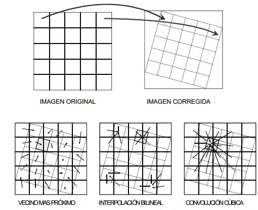
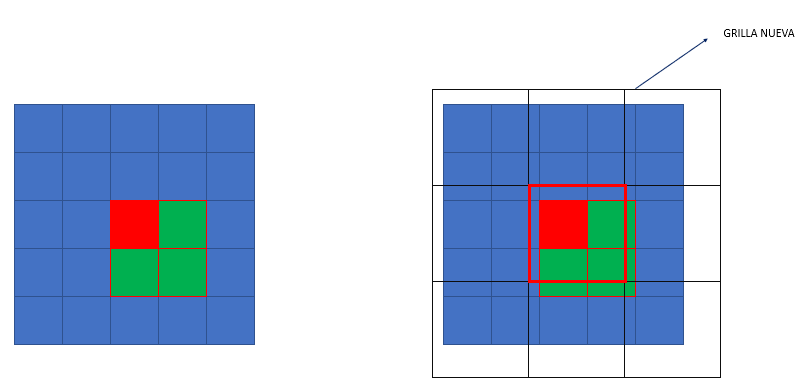
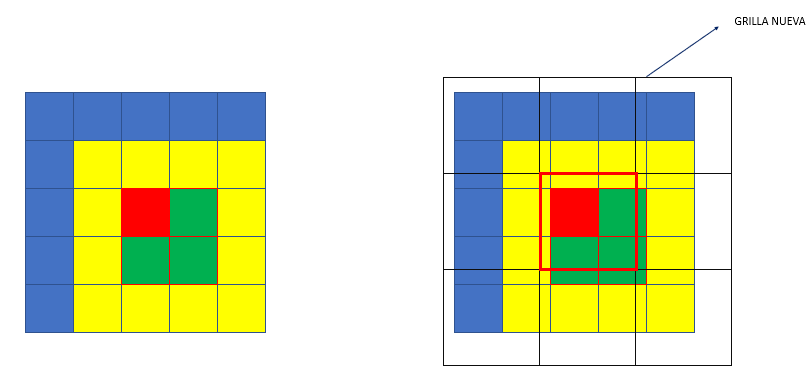
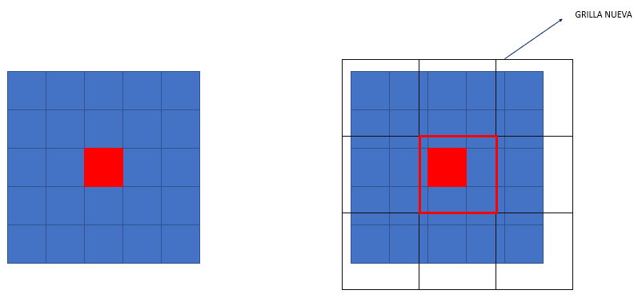

El remuestro consiste en reasignar las celdas de origen en una nueva posición. Este proceso puede implicar un desplazamiento de las celdas o un cambio de resolución espacial. Por ejemplo, si nuestro raster de entrada tiene 30 metros de resolución y realizamos un remuestro a 50 metros, este nuevo pixel de 50 metros puede contener 1.6 veces el pixel original (30 metros) entonces ¿que valor se le debe asignar?

Dependiendo del método que usemos para remuestrar es el valor de salida que tendrá:
Vecino más cercano (Nearest Neighbor)
Este método asiga como valor de salida, el valor de la celda original cuyo centro esté posicionado en la nueva celda. Este método se utiliza cuando no queremos alterar el valor original de entrada sino que solo reposicionarlo, es el caso de las variables discretas, como por ejemplo los usos de suelo.

Ilustración: LabGRS
Interpolación Bilineal (Bilinear interpolation)
Este método no solo toma en cuenta el pixel de origen que ocupa el centro del nuevo pixel, sino que toma en consideración otros 3 y promedia los valores en porcentajes equivalentes a la superficie que cubren del nuevo pixel. Este método tiene a suavizar las transiciones de valores, se utiliza a menudo cuando hay ruido en los datos de entrada.

Ilustración: LabGRS
Convolución Cúbica (Cubic convolution)
Este método es parecido al bilineal pero en lugar de considerar 4 pixeles, considera 16. Es utilizado cuando existe exceso de ruido y tiene como resultado un suavizado mayor que el bilineal.

Ilustración: LabGRS
Mayoría (Majority)
Este método es muy similar al vecino más cercano, la gran diferencia es que en lugar de adquirir el valor del pixel que se posiciona en el centro del nuevo, adquiere el valor del pixel que cubre mayor parte de la superficie del nuevo.

Ilustración: LabGRS